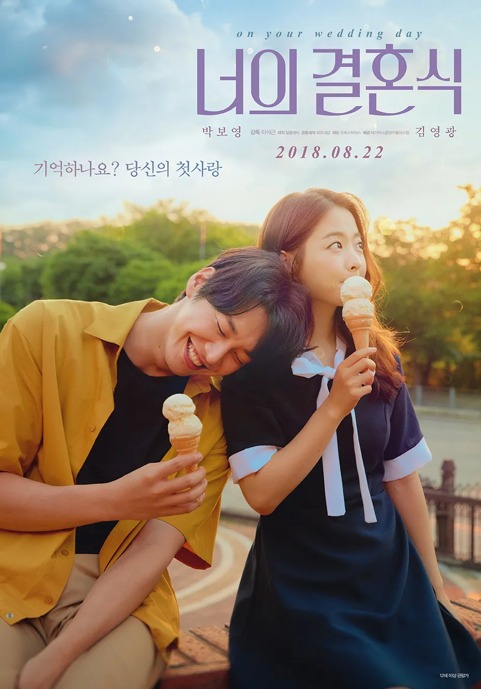

인생 영화

첫사랑의 설렘과 아픔을 담은 이야기를 그린 영화로, 한 남자가 오랜 시간 짝사랑했던 여자의 결혼식을 바라보며 지난 사랑을 회상하는 감성 멜로 영화. 닿을 듯 닿지 않을 듯 아슬아슬한 그 감정선과 마지막에 사랑하는 여자를 보내주며 결혼식을 바라보는 남주인공의 장면에서 정말 표현할 수 없는 많은 감정들이 순간적으로 이입이 되어서 울게 되었던 것 같다.
안녕하세요. 저는 어디서든 배우는 것을 찾고자 하는 캉골입니다. 어릴때
부터 그림을 좋아해서 관찰하는 습관을 가지고 있어요. 그래서 주변에서
늘 배울 점을 찾게 되는 것 같습니다.
평범한 일상 속에서 작은 순간들마다 행복을 잘 찾는다고 생각해요. 나의
행복은 함께하는 사람들로부터 오기 때문에 사람을 그만큼 좋아하기도
하고 주변 사람들에게 사랑을 표현하는 것을 좋아합니다.
첫사랑의 설렘과 아픔을 담은 이야기를 그린 영화로, 한 남자가 오랜 시간 짝사랑했던 여자의 결혼식을 바라보며 지난 사랑을 회상하는 감성 멜로 영화. 닿을 듯 닿지 않을 듯 아슬아슬한 그 감정선과 마지막에 사랑하는 여자를 보내주며 결혼식을 바라보는 남주인공의 장면에서 정말 표현할 수 없는 많은 감정들이 순간적으로 이입이 되어서 울게 되었던 것 같다.
빅나티의 "직항" 이라는 노래이다. 노래 가사 속에서 나의 고민을
그대로 옮겨 놓은 듯한 표현을 많이 찾아서 굉장히 위로를 받았었다.
예시로 가사중에 "그럼 난 이 길(내꿈)에 전부를 걸게 넌 뭘 걸래?"
라는 가사가 있다. 노래를 들을 당시, 꿈에 대한 목표를 잃어서 조금은
무서웠고, 열정을 잃어서 더욱 사람에게 기대려 했던 시기가 있었다.
지금 내가 걸 수 있는 전부는 하나님 뿐인데도 내가 하나님마저 놓치고
있다는 생각이 들었어서 하나님을 향한 마음과 내가 하고 싶은 일에
대한 열망이 조금씩 멀어진다는 생각이 들어 무서웠었다.
"작업이 막혀도 막 하지 않기로 해. 일단 시도해, 그리고 기도해" 라는
가사에서도 나의 이야기를 읽을 수 있었다. 내가 무슨 일을 하던
하나님께 감사할 수 있는 일이였으면 좋겠다는 생각을 했다. 그리고 그
일이 내가 사랑하는 일이였으면 하는 바램이 있다. 나는 그저 내가 할
수 있는 최선을 다할테니 그 속에서 방향을 알려주셨으면 하는
마음으로 기도를 했다.